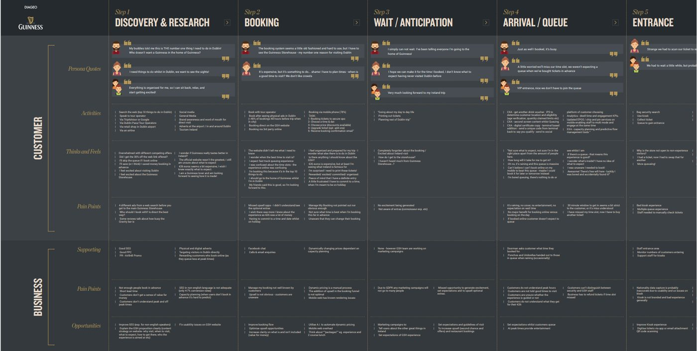

The Challenge
The client needed to unlock venue capacity and eliminate crowding: online booking and slot-selection friction, bottlenecks in arrival queues and the main ticket hall, and uneven visitor distribution through the day.
The Approach
- Full-ecosystem mapping. Traced friction from digital booking through to physical queueing and on-site operations.
- The deliverable. Built a 10-metre physical experience map connecting user friction directly to technical requirements.
- Permanent adoption. The client installed the map at HQ to guide their long-term operational and technical roadmap.
The Impact
- +20% throughput. Accelerated turnstile turnover, eliminating arrival-hall bottlenecks.
- Increased ticket sales. Re-engineered digital slot-allocation to surface open capacity and spread demand evenly.
- Strategic alignment. Bridged business and delivery teams with one unified blueprint for execution.
